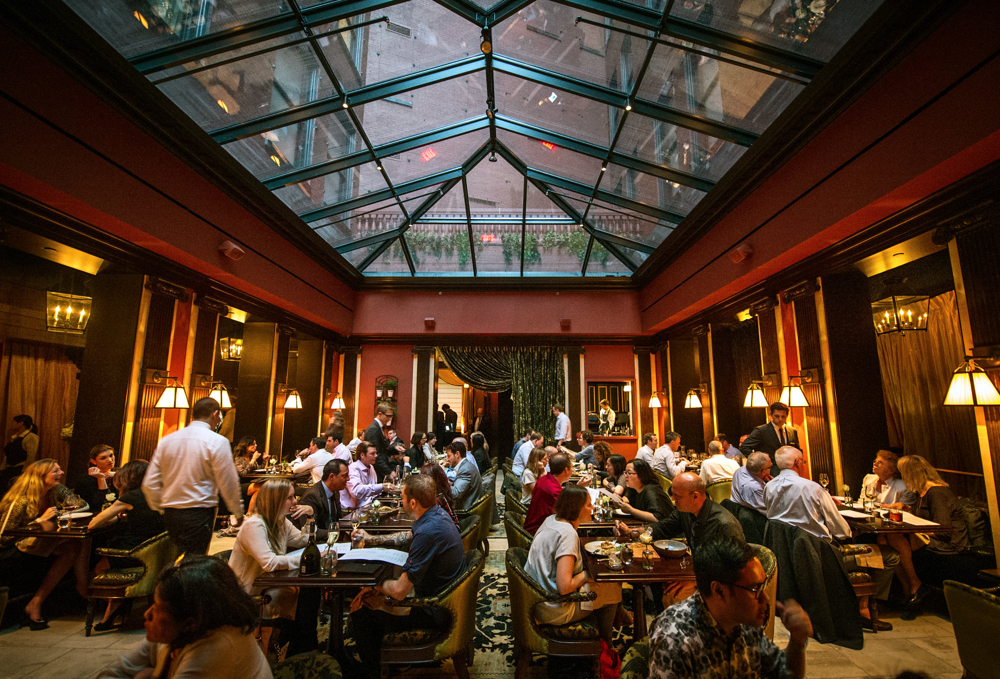

Bienvenidos a Vittoria, un restaurante que ofrece auténtica cocina italiana en un ambiente acogedor y elegante. Fundado en 1995 por la familia Rossi, Vittoria ha sido un destino de comida italiana en la ciudad desde entonces.
En Vittoria, nos apasiona la comida italiana y creemos que la mejor manera de disfrutarla es mediante la utilización de ingredientes frescos y de alta calidad. Es por eso que trabajamos con proveedores locales para garantizar que nuestras pastas, salsas y platos principales sean lo más auténticos y sabrosos posible.
Nos esforzamos por ofrecer una experiencia gastronómica inolvidable a nuestros clientes, ya sea que vengan a disfrutar de una cena romántica para dos, una reunión de negocios o una cena en familia. Nuestro personal amable y experimentado está siempre a su disposición para ayudarle a seleccionar el plato perfecto y ofrecer sugerencias de vino para complementar su comida.
En Vittoria, nos enorgullece crear una experiencia culinaria que deja a nuestros clientes felices y satisfechos. Esperamos darle la bienvenida pronto en nuestro restaurante y hacer de su experiencia gastronómica una memorable.